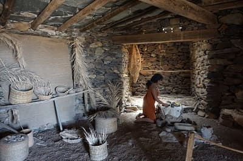
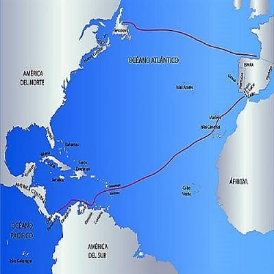

It is believed that the first settlers of the islands were able to arrive from North Africa between the 5th century and the beginning of the Christian era. But some investigations have opened the hypothesis that the arrival could have occurred even 5 centuries before.
The reason for the displacement to the islands by tribes that were in Africa is uncertain although it could have been due to armed struggles between them or by the Roman occupation. Since their arrival they created different economic and social structures on the islands and there was a complete isolation until the arrival of the Spanish conquerors in the 15th century .
Unlike most of the ancient cultures that arose in the environment of isolated oceanic islands, such as the South Pacific, in the Canary Islands no archaeological or documentary evidence of the existence of marine vessels or navigation knowledge has been found. The chronicles of the first Europeans who arrived in the Canaries recounted the fact that the Guanches had completely lost their knowledge of navigation, so that the different islands remained isolated from each other for centuries, developing different cultural modes.
The origin of the inhabitants of North Africa points to the Berber origin since it has been detected that the Guanche genome and the Berber genome coincide in more than 50% of the genetic load. It also has similarities in writing.
When the first Canarians arrived, the fauna and diversity of the islands would change when domestic animals and other species, both animals and plants, entered, but without a doubt, the biggest change would come with the entry of the Spaniards.
Possibly, the islands were discovered for the first time by the Carthaginian explorer Hannón the navigator in his "Periplus", the first trip of African circumvallation, in the year 570 a. C. The first written document with a direct reference to the Canary Islands is due to Pliny the Elder, who cites the trip of King Juba II of Mauritania to the islands in 40 BC. C., and refers to them for the first time as Islands of the Fortunate (Fortunatae Insulae). In this document also appears for the first time the term Canaria, probably used to refer to the island of Gran Canaria. According to Plinio, this name was given to the island in memory of two large mastiffs that the envoys of Juba captured there and later took to Mauritania (the present Morocco), and that they are represented to both sides of the current Canary Islands shield.
This story, however, has some signs of not being exact, among other things because it is known that at the arrival of the Castilians and other later European navigators, the native dog breeds of the archipelago were of small size, like the goats of the Guanches, today they persist 'dogs of prey canario', of great bearing and feared ferocity. Currently, some theories relate it to the North African ethnonym Canarii, a Berber group that was located in northwestern Africa.1 In fact, Plinio himself mentions the Canarii in another text, although he again relates this term to dogs. The historian José Juan Jiménez argues that the term "Canarii" refers to the existence of sea lions.
The Romans baptized each of the islands as:
Next it will be described the people they habitate the islands probably five centuries before to the arrive of the romans.
 The Canarian aboriginal society was patriarchal and matrilineal, and was divided into strata defined by wealth, especially cattle heads. Each island was divided into territories whose king was the guanarteme (Gran Canaria) or mencey (Tenerife). The class system was also different in each of the islands, and has only been clearly identified for the cases of Gran Canaria and Tenerife, where it can be summarized with the categories of nobles (there being several categories within it) and people. The purity of blood among the high-ranking nobles was absolute, and in order to become mencey such purity had to be demonstrated. For the specific case of Tenerife, according to Juan Núñez de la Peña, there were three social groups:
Possibly the Guanarteme or Mencey owned the property of most of the cattle. It also raises the possibility that the mencey also possessed the property of the extraction quarries of raw material for the lytic production. Justice was taught in the public square ('tagoror' in Tenerife, 'flavor' in Gran Canaria) by a group of notables, and according to the first visitors of the islands it was extremely hard. The origin of the names of the inhabitants of the islands is as follows:
The Aboriginal economy was based primarily on livestock, with the exception of Gran Canaria, where the development of agriculture was more important. Due to the inexistence of mammals native to the Canary Islands, the cattle that the first islanders had were brought from their areas of origin, in North Africa, and adapted to the environmental characteristics of the Archipelago. This consisted mainly of goats and a type of sheep with smooth fur and without wool, similar to the type of sheep that for thousands of years populated the north of Africa and whose descendants still inhabit the Sahel zone.17 The goat and the sheep played a fundamental role in subsistence, using both meat and milk and butter, as well as skins for the preparation of clothing (tamarco dresses and others), bones for an important bone industry (development of punches, needles, decorative elements, etc) and the antlers (manufacture of types of manual plows). Also, although to a lesser extent, the pig was present in the different islands, just like the dog.
The agriculture was fundamentally cereal, cultivating species of wheat and barley, as well as peas and other legumes. One of the main uses of cereals was the elaboration of the traditional gofio.
The subsistence in the islands was completed with the collection of wild vegetal species; the hunting of animals, mainly birds and large reptiles; fishing, by means of rudimentary methods to capture fish from intertidal zones, puddles and shallow areas, as well as shellfishing, with the concentration of large quantities of mollusc remains in different Canary sites.
 The Guanche people were characterized for having an advanced cultural development, corresponding to a protohistoric cultural horizon. These are villages with cultural features typical of the North African Berber area, probably influenced by the Phoenician - Punic and even Latin cultures, given the contact of these civilizations with the natives of North Africa in the times of the Phoenician and Roman expansion.
The Guanche people were characterized for having an advanced cultural development, corresponding to a protohistoric cultural horizon. These are villages with cultural features typical of the North African Berber area, probably influenced by the Phoenician - Punic and even Latin cultures, given the contact of these civilizations with the natives of North Africa in the times of the Phoenician and Roman expansion.
The indigenous societies of the archipelago oriented and aligned astronomically some sanctuaries and observation points, shrines, temples and even necropolis.
The decentralization of the island was in guanartematos where guanarteme was the leader of the community.
In Gran Canaria, at first there were 10 guanartematos (Gáldar, Telde, Agüimes, Tejeda, Aquexata, Agaete, Tamaraceite, Artebirgo, Artiacar and Arucas), but they would be united in a single kingdom (Gáldar) due to the campaign of unification and conquest of the island promoted by the caudillo Gumidafe (Gáldar) together with his wife Andaman fortune-teller, shortly before the Castilian conquest was divided around two large demarcations because his grandson Taghoter Semidán had two sons: Guanache Semidán guanartemato de Gáldar (Agaldad ) and Bentanguaire Semidán guanartemato from Telde.
 The conquest of the Canary Islands lasted almost one hundred years, from 1402 to 1496, meant the disappearance of a large part of the elements of aboriginal culture in all the islands, the conversion to Christianity and the miscegenation between settlers and local population.
The conquest of the Canary Islands lasted almost one hundred years, from 1402 to 1496, meant the disappearance of a large part of the elements of aboriginal culture in all the islands, the conversion to Christianity and the miscegenation between settlers and local population.
The Canary Islands were inhabited before the European conquest by different populations that have been popularly known as Guanches, although in reality, each island has a name: Canarios (inhabitants of Gran Canaria), Majos (Lanzarote and Fuerteventura), Benahorita (La Palma), Bimbaches (El Hierro) and Guanches (Tenerife). The ancient inhabitants of the Canary Islands were a town linked to the ancient Berbers of North Africa.

In the mid-sixteenth century, the population of the whole of the Canary Islands, did not exceed thirty-five thousand inhabitants. This population was concentrated mainly in the islands of Tenerife and Gran Canaria (approximately three quarters of the total).
In Gran Canaria, two distinct phases can be seen, marked by an initial growth and then by a population stagnation for the second half of the 16th century. At the beginning of the century there lived less than three thousand inhabitants on the island, a population that will increase to eight thousand people around 1550, this growth should be thanks to immigration from the Peninsula (both Portugal and Spain) as well as imports of slaves from Africa and of course to natural growth, all this under the expansion of the sugar economy. But at the end of that century the population barely exceeded that figure and in fact at the beginning of the seventeenth it even drops to six thousand inhabitants, being surpassed in this concept by La Palma. The causes of this stagnation and then regression were the destructive piratical invasions of the 1990s, epidemics, bad harvests and emigration caused by the economic crisis unleashed with the end of the sugar cycle.
Immediately after the conquest, and during the first half of the sixteenth century, the cultivation of sugarcane, introduced from Madeira, was implanted in the Canary Islands. It had a great expansion in Gran Canaria where it occupied a good part of the lands of the north and east of the island up to 500 meters above sea level. It also gained importance in the islands of Tenerife, La Palma and La Gomera.
It was an irrigated crop that consumed large amounts of water and depleted the soil, so it required permanently to clear new land. On the other hand, the extraction of sugar required the consumption of large quantities of wood during the process of cooking the pulp. Three scarce resources in the islands and, therefore, factors that contributed to make the product more expensive.
The destination of the production was export to the Iberian Peninsula, Flanders, France and Genoa. The control of this trade was in the hands of foreign merchants, especially Genoese and Flemish.
The profitability of Canarian sugar remained until this crop was introduced in America and began to be exported to Europe. The lower cost of the American production will determine in the middle of the XVI century the collapse of the sugar sector, seriously affecting the island of Gran Canaria.
After the crisis of the sugar cycle, wine became the fundamental product of Canarian exports, at the end of the 16th century, but especially during the 17th century. The wine boom coincided with a period of high prices that made Canarian production highly profitable.
In the early twentieth century the English introduced a new monoculture in the Canary Islands, which will be bananas, whose export was controlled by commercial companies such as Fyffes, with England being the main market for fruit.
The rivalry between the elites of the cities of Santa Cruz de Tenerife and Las Palmas de Gran Canaria for the capital of the islands, which was in the first, will lead to the division of the archipelago in two provinces in 1927.
The Canary Islands was exactly where Franco began the military uprising on July 17, 1936, organized by General Mola, declaring the State of War throughout the archipelago the following day.
During the postwar period, like the rest of the state, the Canary Islands suffer a period of crisis where hunger and misery are frequent. There is again a wave of migration towards Venezuela.
Towards the 70s begins to produce a change in the Canarian economy with the boom in tourism. From these moments, livestock and agriculture will enter a setback, with the exception of banana and tomato export monocultures.
After the death of Franco and the establishment of a democratic regime of Parliamentary Monarchy, the creation of a statute of autonomy for the archipelago was proposed, a statute that was approved in 1982.
© 2016 - All Rights Reserved - Diseñada por Sergio López Martínez
El sitio se mantiene gracias a la publicidad, por favor Desactiva Adblock para seguir navegando
He desactivado Adblock![[Valid RSS]](https://www.onepointsync.com/wp-content/uploads/2016/08/valid-rss-rogers.png "Validate my RSS feed")